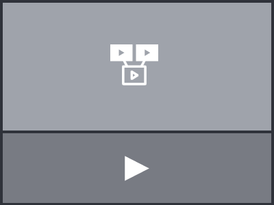

Use any video or even an empty canvas with just a duration as a basis for synchronizing contents (like interactive transcripts, overlays or annotation timelines).
Create non-linear networks of videos which are connected via clickable hotspots and can be freely navigated by the user (like branching narratives or interactive explainer videos).
Place documents on top of the video (e.g. text, images, web pages, interactive maps or custom text/html) and decide how and when they should be displayed.
Add supplementing materials at certain points of time and decide how they should be displayed in the player using the interactive layout editor.
Film shall be "programmed" with Open Web Technologies, rather than rendered out of an editing interface
By "rendering" a film, we permanently seal it and "burn" all its fragments (media assets, cuts, text overlays, effects, animations) irreversibly into one flat video file. We will never render or export hypervideos to flat video files.
No separation of editor and viewer / player. Yes, that means anyone can edit any FrameTrail hypervideo anywhere (and then download or save the changes to their own FrameTrail installation).
All data is stored as JSON files - no database. Copy the entire data folder to move your instance between servers. Or download data with the built-in "Save As" feature and continue editing locally.

The way you use, arrange and display the different components of FrameTrail is up to you and the affordances of your project. From just using FrameTrail as a full-site video player up to using it as a highly interactive hypervideo solution, everything is dynamically configurable (see also: Getting Started > Layout Areas).
Are you a developer and want to remix / improve / extend this software? Please head over to the Contributors Guide.
Joscha Jäger, Michael J. Zeder, Michael Morgenstern, Olivier Aubert, Philo van Kemenade
FrameTrail is dual licensed under MIT and GPL v3 Licenses.
For more info check out the License Details.